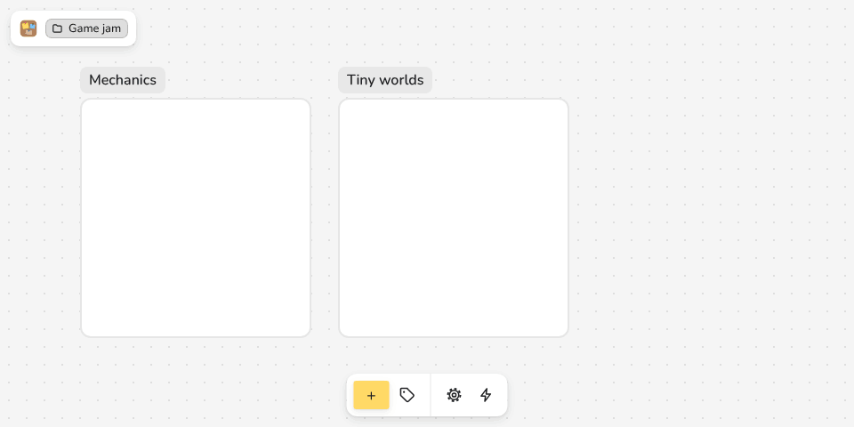
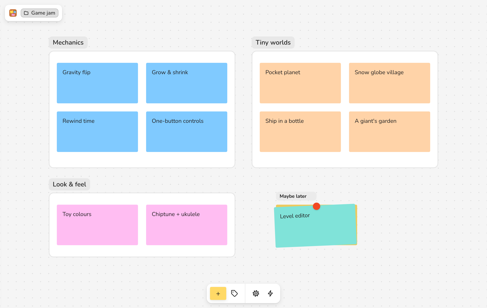
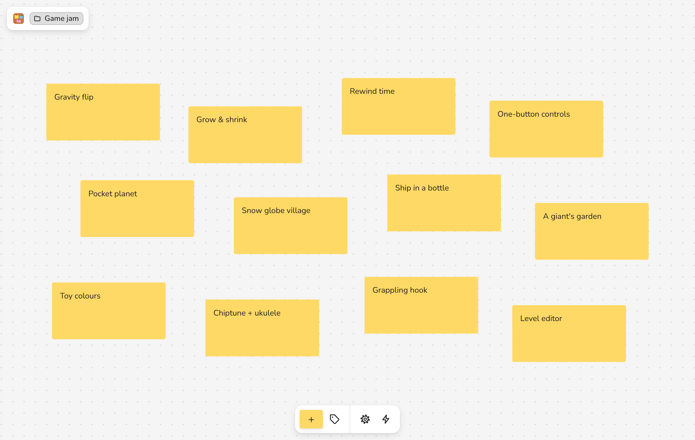
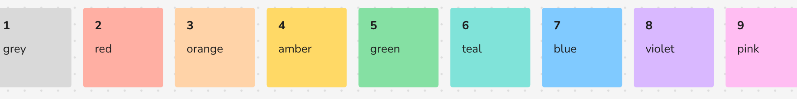
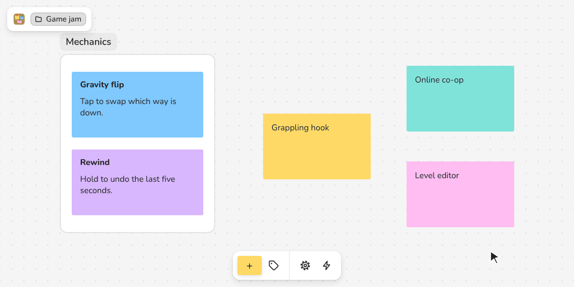
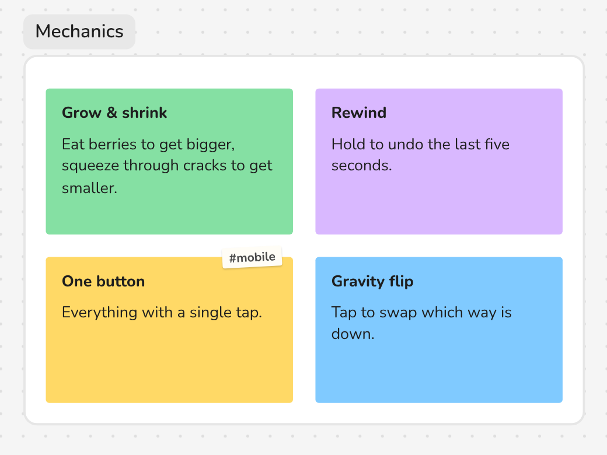

Pour in, then sort
Dump it all out. Then move it around.
Paste a list and every line becomes its own card. Drag the cards into sections and colour them as you go. The moment the clusters show up is the moment you understand what you have.
- One keystroke from a thought to a card: N makes one under the pointer.
- Number keys 1–9 colour whatever is selected.
- Nothing moves by itself. Guides only help while you drag.



The nine colours on the number keys. The picker has the full FigJam set of 22, plus any hex you like.

Sections & stacks
Two kinds of thing. That's the whole model.
A board has cards and sections, nothing else. A card sits in whichever section its centre is over. A stack is a section drawn as a pile, for the ideas you're not ready to throw away.
- Hold a card over another for a moment and they stack. Drop more on the pile to add them.
- Click the pile to fan it out and read it. Esc puts it back.
- Open a section with ⌥-double-click and the canvas becomes its inside.

Plain Markdown files
Your notes stay yours.
Every card is a .md file and every section is a folder. Open the same folder in Obsidian or Finder and you see the same grouping the board shows. No database, no export step.
- A card's first heading is its title, and the file name follows it.
- Positions and lines live in one
board.json, never in your text. - Fold a section and its folder isn't even read until you open it, so big boards stay quick.

Game jam
Game jam/ board.json The pitch.md Before Friday.md ▾ Mechanics/ _index.md Gravity flip.md Grow & shrink.md One button.md Rewind.md ▸ Maybe later/ ▸ …
Mechanics/Gravity flip.md
--- color: blue --- # Gravity flip Tap to swap which way is down.
board.json — where that card sits, and its line to The pitch (excerpt)
"Mechanics/Gravity flip.md": { "x": 260, "y": 180, "w": 220, "h": 130 } { "from": "Mechanics/Gravity flip.md", "to": "The pitch.md", "fromPort": "right", "toPort": "left" }